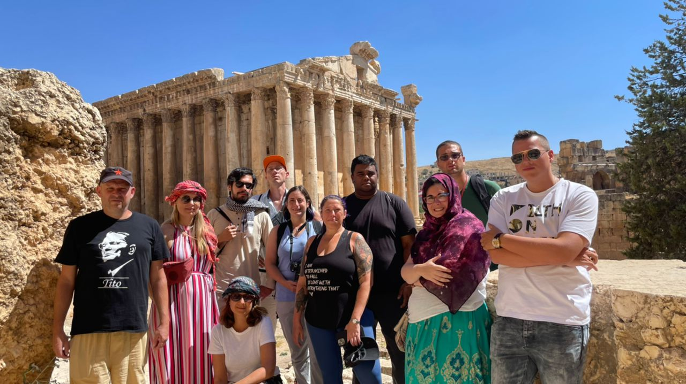
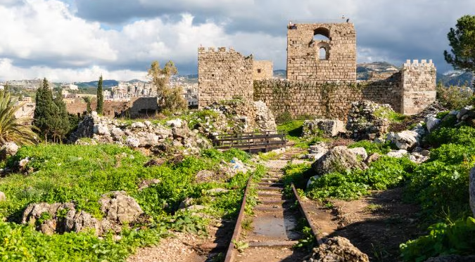
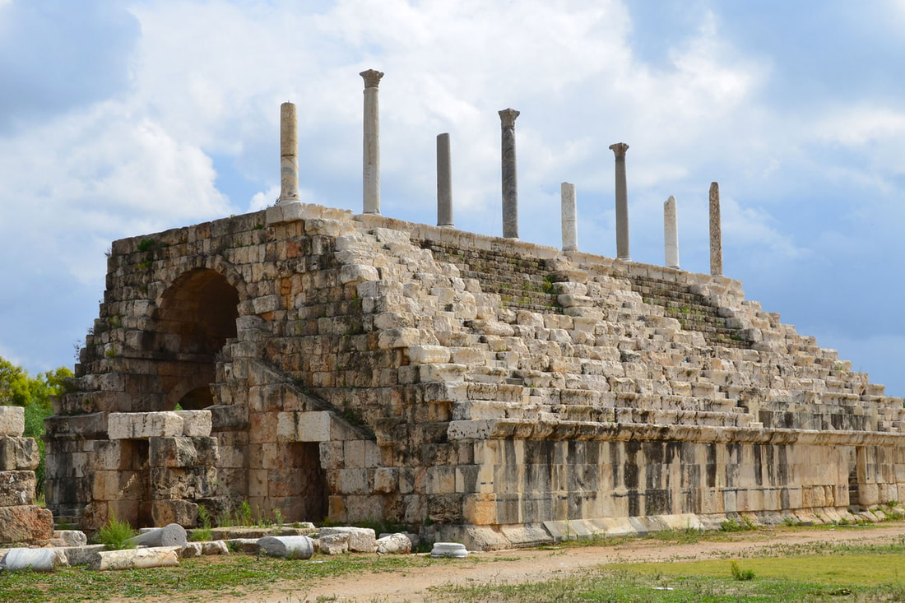
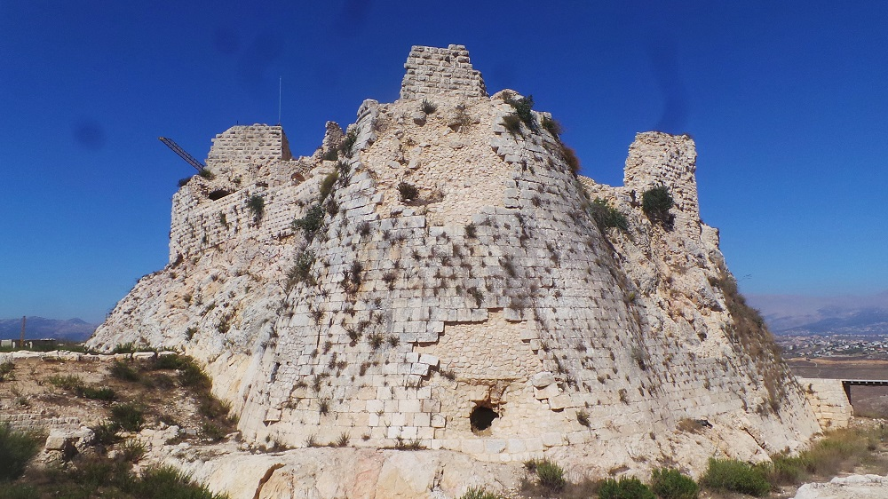
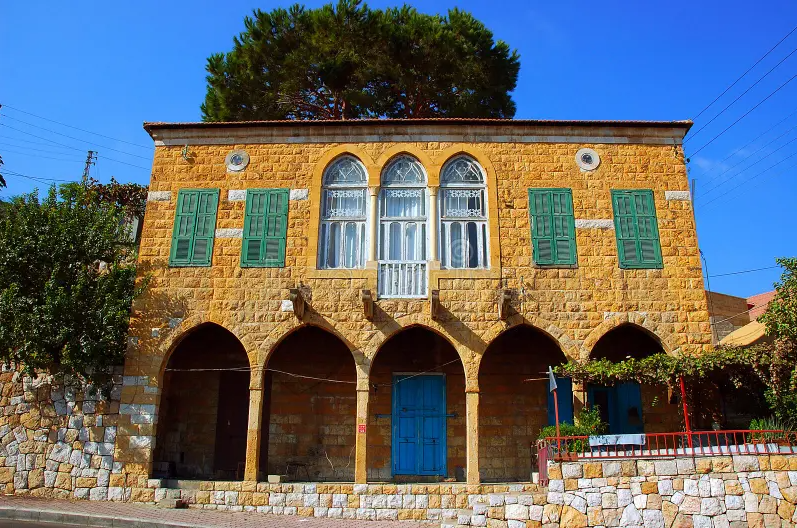
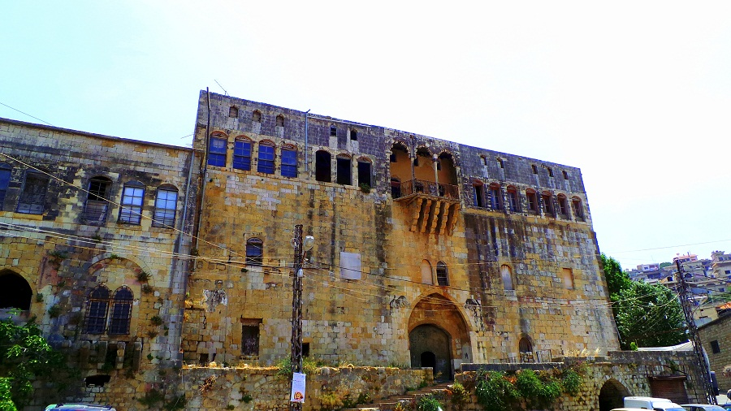
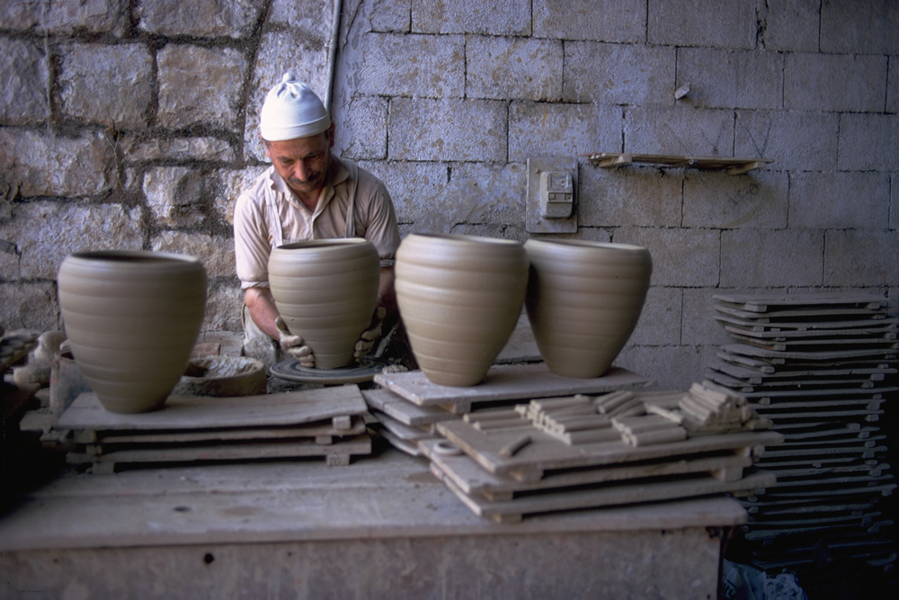

Ministry of Tourism Lebanon
DISCOVER LEBANON
The Phoenicians invented the alphabet here and sailed from these shores to found cities across the Mediterranean. The Greeks came and built temples. The Romans followed and raised columns so large that modern engineers still cannot fully explain how they were moved. The Byzantines covered floors with mosaics. The Arabs transformed coastal cities into centers of Islamic learning and trade.
Heritage tourism in Lebanon is the act of moving through all of these layers, not as a passive observer, but as someone walking through a living continuum. Many of Lebanon's most significant heritage sites are not isolated ruins in a desert. They are embedded in active cities, surrounded by working markets, inhabited by communities whose ancestors have lived on that same ground for thousands of years.
That embeddedness, that refusal to be merely historical, is what makes Lebanese heritage tourism unlike anything else in the region.


The Roman temple complex at Baalbek is the most awe-inspiring ancient site in Lebanon and one of the greatest in the entire world. The Temple of Jupiter, once supported by 54 columns each standing over 20 meters tall, six of which still stand, was built on a platform whose foundation stones include the Trilithon, three blocks of limestone each weighing over 800 tonnes, the largest stones ever cut and placed by human hands in the ancient world. The adjacent Temple of Bacchus, better preserved than the Parthenon, is considered the finest example of Roman decorative architecture in existence.
Byblos is the oldest continuously inhabited city in the world, with a documented history stretching back over 7,000 years. It was from Byblos that the Phoenicians exported papyrus to Greece, and the Greek name for the city, Byblos, gave us the word "Bible." The archaeological site contains Neolithic settlements, Phoenician temples, an Egyptian necropolis, a Roman colonnaded street, a Crusader castle, and medieval city walls, all within a few hundred meters of each other, all overlooking the same sea that Phoenician traders once sailed toward the horizon.


Ancient Tyre was one of the greatest cities of the Phoenician world, an island fortress that Alexander the Great spent seven months besieging before connecting it to the mainland with a causeway that still exists today as the city's peninsula. Its Roman remains are extraordinary: a full-size hippodrome that once held 20,000 spectators, a colonnaded road lined with sarcophagi, triumphal arches, and a vast necropolis. Much of ancient Tyre lies underwater in the bay, visible to divers and snorkelers, making it one of the most unique archaeological environments in the Mediterranean.
Sidon is one of the oldest cities in the world and one of the greatest of the Phoenician city-states, a trading power whose ships reached Egypt, Greece, and Persia. Its Sea Castle, built by the Crusaders on a small island just offshore, guards an ancient harbor that has been in use since at least the Bronze Age. Beneath the medieval city, excavations have revealed Phoenician temples, Roman baths, and Byzantine churches. The city's old souk and vaulted medieval markets have operated continuously for over seven centuries and remain among the most atmospheric in Lebanon.


When postwar reconstruction began in Beirut's Downtown in the 1990s, excavations revealed what historians had long suspected, the modern city had been built directly on top of one of the most layered archaeological sites in the world. Phoenician harbors, Hellenistic buildings, Roman streets, Byzantine churches, Umayyad structures, and Crusader towers were all found within meters of each other beneath the modern street grid. Much of this has been preserved in open-air archaeological gardens, making Beirut one of the only cities in the world where you can stand in a contemporary urban center and look directly down into 5,000 years of continuous human habitation.

Built over 30 years by Emir Bashir II between 1788 and 1840, Beiteddine Palace is Lebanon's finest historic building, a masterpiece of Lebanese palace architecture blending Arab, Ottoman, and Italian influences. Three interconnected courtyards of increasing grandeur lead through halls decorated with intricate geometric tilework, carved stone screens, and hand-painted wooden ceilings. Its museum houses one of Lebanon's finest collections of Byzantine mosaics.

The old city of Tripoli is one of the finest surviving examples of Mamluk urban architecture in the Arab world, a dense network of mosques, madrasas, hammams, and khans built between the 13th and 16th centuries, many still in active use today. The Great Mosque of Tripoli, originally a Crusader cathedral, and the Khan al-Khayyatin, a silk merchants' khan, are among the most significant individual buildings. The Citadel of Raymond de Saint-Gilles, a Crusader fortress rebuilt by the Mamluks, looms above the entire old city.

The best-preserved Ottoman-era village in Lebanon, Deir el Qamar served as the seat of the Lebanese Emirate for over two centuries. Its central square, surrounded by palaces, a 17th-century mosque, a Maronite church, and a silk khan all built in the same warm golden limestone, has barely changed in three hundred years. On quiet evenings, when the light turns amber on the stone facades, it is one of the most atmospherically perfect historic spaces in the entire country.

Perched 700 meters above the Litani River gorge on a near-vertical cliff face, Beaufort Castle is the most dramatically situated Crusader fortress in Lebanon. Originally built in the 12th century, it passed through the hands of Crusaders, Saladin, and Arab rulers across the centuries. Its extensive ruins, towers, cisterns, vaulted halls, and rampart walks, are open to visitors, and the panoramic view from the top, stretching across the southern hills and the river valley far below, is one of the most extraordinary in the country.

The traditional Lebanese mountain house, built from golden limestone with triple-arched facades, red-tiled roofs, and interior courtyards, is one of the most distinctive and beautiful vernacular architectural traditions in the Middle East. These houses, concentrated in the mountain villages of Keserwan, Mount Lebanon, and the north, represent centuries of accumulated knowledge about how to build beautifully in a particular landscape with local materials. Many have been restored and converted into guesthouses, restaurants, and museums.

One of the largest and most intact feudal palace complexes in Lebanon, Hasbaya Castle was the seat of the Shihab dynasty, the ruling family of Mount Lebanon, for centuries. Unlike most Lebanese castles which are ruins, Hasbaya Castle is a living complex, parts are still inhabited by descendants of the original ruling family, who have served as informal guardians of its extraordinary halls, courtyards, and stables for generations. It is a rare example of a historic monument that has never been fully abandoned.
Lebanon's heritage is not only in its stones. It lives in the language its people speak, the food they prepare, the music they play, and the social rituals that have structured daily life in these mountains and cities for hundreds of years.
The Lebanese dialect of Arabic, rich with French, Syriac, and Aramaic loanwords, is itself a kind of living archive. The traditional mountain house with its triple arch and red roof represents centuries of architectural knowledge. The mezze table, with dozens of small dishes laid out for communal sharing, encodes a philosophy of hospitality that dates back to the Phoenician traders.
Zajal — Oral Poetry TraditionImprovised competitive poetry in the Lebanese dialect, performed at festivals and celebrations across mountain regions. One of Lebanon's most distinctive intangible heritage traditions.
Dabke — Folk Dance
Lebanon's national folk dance, performed at weddings and village celebrations. Regional variations reflect the distinct cultural character of different communities.
The Mezze Tradition
The Lebanese mezze, dozens of small dishes shared communally, is a living expression of hospitality recognized as part of Lebanon's intangible cultural heritage.
Traditional Textile Arts
Hand-woven silk fabrics, embroidered costumes, and loom-woven textiles from mountain villages represent a craft heritage connected to the silk industry that shaped Mount Lebanon's economy and identity.
Phoenician-Inspired Craft Revival
A growing movement of Lebanese craftspeople draws on Phoenician motifs, glassblowing techniques, and purple-dye traditions to create contemporary work rooted in ancient heritage, especially in workshops around Byblos and Tripoli.

Lebanon's archaeological sites, historic buildings, and traditional villages are irreplaceable. Once lost to neglect, development, or conflict, they cannot be rebuilt or recovered. Heritage tourism generates the economic justification, the public attention, and the international pressure needed to ensure that these sites are protected, maintained, and passed to the next generation intact.
In a region full of beautiful beaches and modern cities, Lebanon's depth of historical heritage gives it a tourism offer that no neighboring country can replicate. Nowhere else in the Middle East can a traveler move so quickly between Phoenician, Roman, Crusader, Mamluk, and Ottoman heritage in such concentrated form. That uniqueness is a competitive advantage of enormous and largely unrealized value.
Heritage sites act as anchors for local economies, drawing visitors who spend on accommodation, food, transport, and crafts in the surrounding communities. When a heritage site is well-managed and well-promoted, the economic benefit spreads far beyond the site itself, into the shops, restaurants, guesthouses, and artisan workshops of the town or village around it.
At a time when Lebanon faces profound political and social pressures, its shared heritage, the Phoenician alphabet, the Roman temples, the medieval cities, represents something that belongs to all Lebanese regardless of sect, region, or political affiliation. Heritage tourism that celebrates this shared history is a quiet but powerful act of national cohesion.
Lebanon has one of the largest diasporas of any country in the world, an estimated 14 million Lebanese living abroad, compared to roughly 4 million at home. For diaspora Lebanese, heritage tourism is a form of return to roots, a journey to understand where they come from, to walk through the villages their grandparents left, and to reconnect with a history and identity that has been carried across the world in memory.
Every international visitor who comes to stand before the temples of Baalbek, walk through the streets of Byblos, or explore the souks of Tripoli becomes an ambassador for Lebanon when they return home. Heritage tourism is one of the most effective mechanisms Lebanon has for changing the international narrative about the country, shifting the story from conflict and crisis to civilization and resilience.
©2026 All Rights Reserved - Ministry of Tourism Lebanon